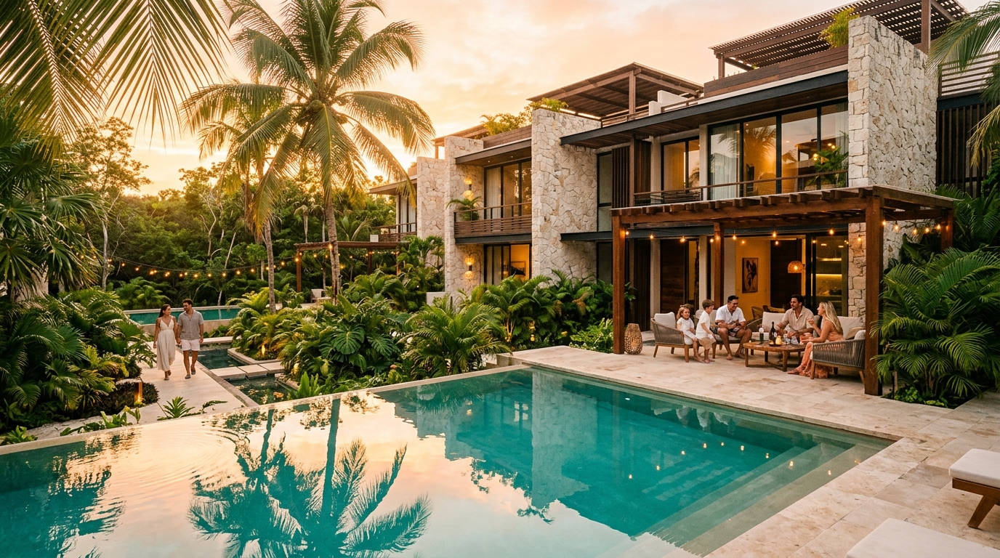

АНАЛИТИЧЕСКИЙ ДОКЛАД · МАКРОЭКОНОМИКА & ПРАВО 2026
5 фундаментальных причин
5 фундаментальных причин
переехать в Мексику в 2026 году
Экспертное исследование правовых механизмов легализации, защиты частного капитала, налогового резидентства и стандартов жизни в Карибском регионе.
150+
Стран без виз
0.1%
Налог Predial
JCI USA
Стандарты госпиталей
320 дн
Солнца в году
АНАЛИТИЧЕСКИЙ ДЕПАРТАМЕНТ · STELLAR RESIDENCES
МЕКСИКА, КИНТАНА-РОО · 2026